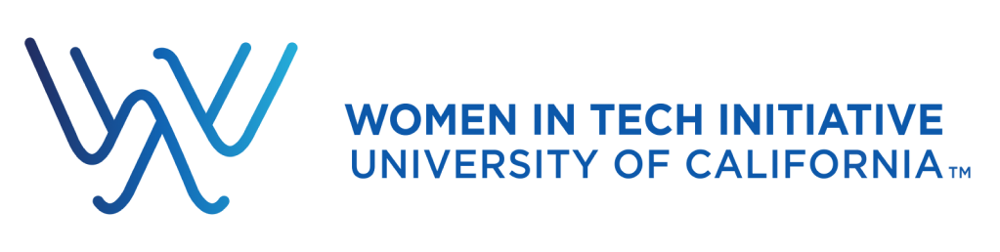
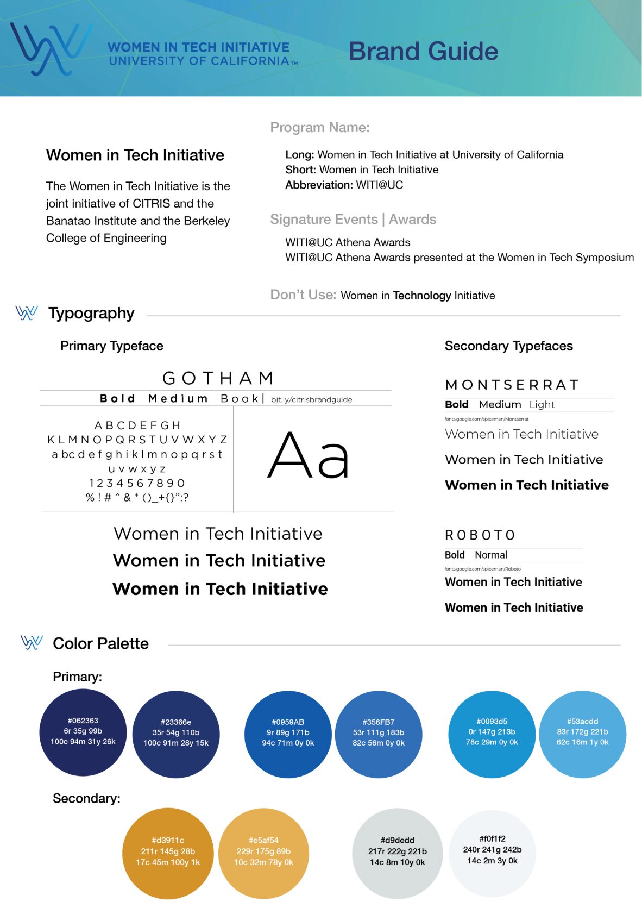

Women in Tech Initiative
WiTI envisions a world in which under-included communities are proportionately represented and equitably compensated throughout the professional ranks in the tech industry and academia.
Together we the Program Director and CITRIS Executive Director, we have developed branding for the Women in Tech Initiative.
The notion of diversity was at the core of the mission statement of the center. Diversity in the technical workforce at all levels enhances collective intelligence and innovation. An information-based society thrives with a vibrant intellectual ecosystem. Industry benefits financially, and technologists enjoy career longevity sustained by personal and professional satisfaction.
Audience
WITI@UC brings together faculty, staff, and students from a range of disciplines and multiple campuses to work in partnership with executives, board members, investors, entrepreneurs, and career technologists in the technology industry — all committed to promoting an inclusive and equitable environment for women in technical fields.
Logo
Our logo design was based on these three key concepts: diversity, intellectual ecosystem (innovation), and career longevity. After several iterations, we decided on bringing the neutral and cool blue color with the smooth gradient and natural flow for the logotype.
Brand Guide
